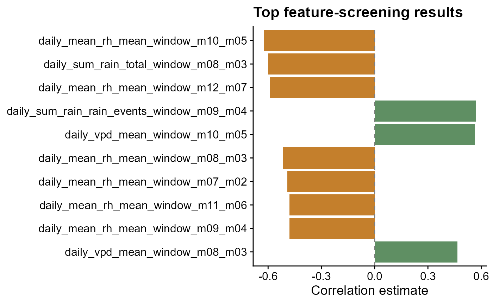
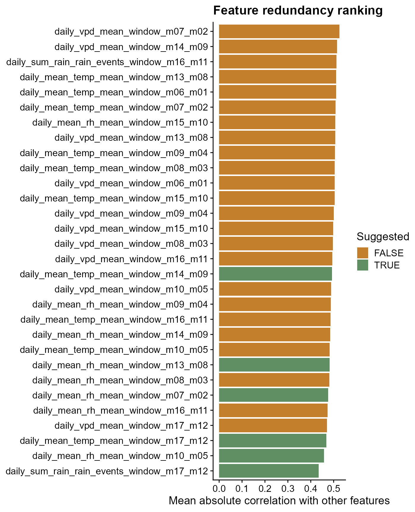
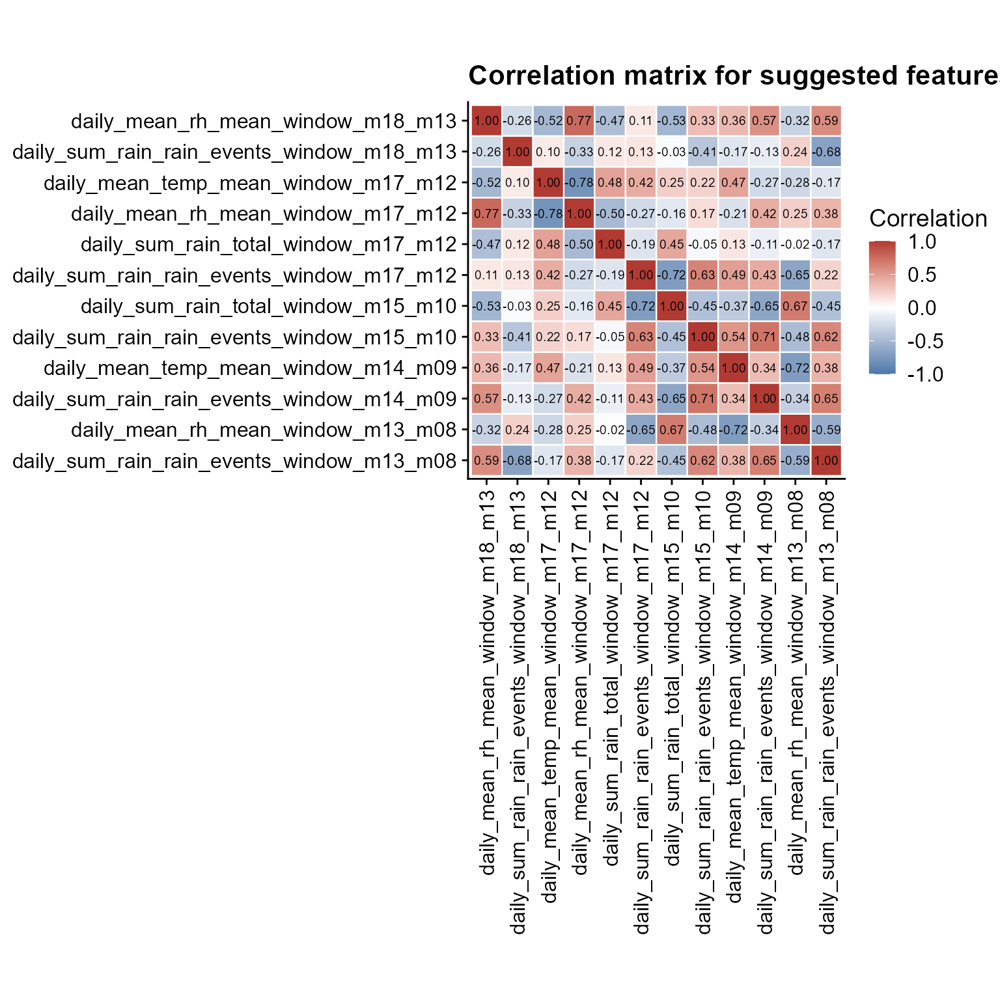

Feature Screening for Disease Modeling
Source:vignettes/feature-screening.Rmd
feature-screening.RmdRun this setup first. It loads the packages used in the article and sets figure options used by the screening examples.
From windows to candidate predictors
Window-pane analysis can create many weather predictors. The next task is to decide which ones deserve attention before modeling. This article uses two screening functions:
-
screen_window_features()ranks each candidate predictor by its correlation with the disease response. -
screen_feature_correlations()compares candidate predictors against each other and suggests a less redundant subset.
Important. Screening is not model validation. It is only an first pass for reducing a large feature space before fitting predictive models.
Build a feature table
Before screening, we need one row per site and one column per
candidate predictor. The bundled window_pane_demo_data
object already contains daily weather summaries and one disease
assessment per site. Here the windows end one day before the assessment
date, so the disease observation is not mixed with same-day weather.
The daily weather column names are kept exactly as they appear in the
data: daily_mean_temp, daily_mean_rh,
daily_sum_rain, and daily_sum_leaf_wetness. We
also derive daily_vpd from temperature and relative
humidity to show that derived variables can be screened in the same
workflow. The statistics list uses those column names, so
the generated feature names show both the weather variable and the
window summary.
data(window_pane_demo_data)
weather <- window_pane_demo_data$weather |>
derive_vpd(daily_mean_temp, daily_mean_rh, name = "daily_vpd")
assessments <- window_pane_demo_data$assessments
windows <- make_windows(min_offset = -18, max_offset = -1, width = 5, reference_col = "assessment_time")
daily_weather_cols <- c(
"daily_mean_temp",
"daily_mean_rh",
"daily_vpd",
"daily_sum_rain",
"daily_sum_leaf_wetness"
)
summary_statistics <- list(
daily_mean_temp = list(mean = "mean", days_18_26 = count_between(18, 26)),
daily_mean_rh = list(mean = "mean", humid_days = humid_hours(90)),
daily_vpd = list(mean = "mean", dry_days = count_above(1.2)),
daily_sum_rain = list(total = "sum", rain_events = rain_events(0.2)),
daily_sum_leaf_wetness = list(wet_days = wet_days(0)),
.conditions = list(
favorable_days = count_when(
daily_mean_temp >= 18 & daily_mean_temp <= 26 & daily_mean_rh >= 90
)
)
)
features <- window_pane(
weather = weather,
assessments = assessments,
windows = windows,
id_col = "site_id",
response_col = "disease_intensity",
weather_cols = daily_weather_cols,
statistics = summary_statistics
)
feature_cols <- features %>%
select(contains("_window_")) %>%
names()
feature_table_overview <- data.frame(
rows = nrow(features),
candidate_feature_columns = length(feature_cols)
)
knitr::kable(feature_table_overview)| rows | candidate_feature_columns |
|---|---|
| 10 | 143 |
| feature |
|---|
| n_obs_window_m18_m13 |
| daily_mean_temp_mean_window_m18_m13 |
| daily_mean_temp_days_18_26_window_m18_m13 |
| daily_mean_rh_mean_window_m18_m13 |
| daily_mean_rh_humid_days_window_m18_m13 |
| daily_vpd_mean_window_m18_m13 |
| daily_vpd_dry_days_window_m18_m13 |
| daily_sum_rain_total_window_m18_m13 |
Screen with Spearman correlation
The first question is: which individual weather-window predictors are
most associated with disease intensity?
screen_window_features() answers that with one correlation
test per candidate predictor. Spearman correlation is useful for this
example because it ranks monotonic relationships and is less dependent
on a linear response shape than Pearson correlation.
screened <- screen_window_features(
data = features,
response_col = "disease_intensity",
feature_cols = feature_cols,
method = "spearman"
)
knitr::kable(screened %>% slice_head(n = 10))| feature | metric | window | estimate | p_value | n_complete | p_adjusted |
|---|---|---|---|---|---|---|
| daily_mean_rh_mean_window_m10_m05 | daily_mean_rh_mean | window_m10_m05 | -0.6242424 | 0.0602490 | 10 | 0.7946892 |
| daily_sum_rain_total_window_m08_m03 | daily_sum_rain_total | window_m08_m03 | -0.6000000 | 0.0731199 | 10 | 0.7946892 |
| daily_mean_rh_mean_window_m12_m07 | daily_mean_rh_mean | window_m12_m07 | -0.5878788 | 0.0802151 | 10 | 0.7946892 |
| daily_sum_rain_rain_events_window_m09_m04 | daily_sum_rain_rain_events | window_m09_m04 | 0.5698029 | 0.0855044 | 10 | 0.7946892 |
| daily_vpd_mean_window_m10_m05 | daily_vpd_mean | window_m10_m05 | 0.5636364 | 0.0957916 | 10 | 0.7946892 |
| daily_mean_rh_mean_window_m08_m03 | daily_mean_rh_mean | window_m08_m03 | -0.5151515 | 0.1328231 | 10 | 0.7946892 |
| daily_mean_rh_mean_window_m07_m02 | daily_mean_rh_mean | window_m07_m02 | -0.4909091 | 0.1544427 | 10 | 0.7946892 |
| daily_mean_rh_mean_window_m11_m06 | daily_mean_rh_mean | window_m11_m06 | -0.4787879 | 0.1660580 | 10 | 0.7946892 |
| daily_mean_rh_mean_window_m09_m04 | daily_mean_rh_mean | window_m09_m04 | -0.4787879 | 0.1660580 | 10 | 0.7946892 |
| daily_vpd_mean_window_m08_m03 | daily_vpd_mean | window_m08_m03 | 0.4666667 | 0.1782193 | 10 | 0.7946892 |
Plotting the strongest screened features makes the sign and magnitude of the associations easier to scan. Positive and negative correlations are separated by color because they suggest different biological interpretations: higher values of a predictor may be associated with either higher or lower disease intensity.
top10 <- screened %>%
mutate(abs_estimate = abs(estimate)) %>%
arrange(desc(abs_estimate)) %>%
slice_head(n = 10) %>%
mutate(feature = factor(feature, levels = rev(feature)))
ggplot(top10, aes(estimate, feature, fill = estimate > 0)) +
geom_col(show.legend = FALSE) +
geom_vline(xintercept = 0, linetype = "dashed", color = "gray50") +
scale_fill_manual(values = c("#c47f2c", "#5f8f63")) +
labs(
title = "Top feature-screening results",
x = "Correlation estimate",
y = NULL
) +
cowplot::theme_half_open()
The output provides:
-
estimate: correlation estimate -
p_value: raw test p-value -
p_adjusted: corrected p-value -
metric: parsed metric name -
window: parsed relative-time window label
The adjusted p-value is useful because many window-derived predictors are being tested at once. It should not be read as final proof that a predictor belongs in a model, but it helps keep the first screen from being driven only by chance.
Reduce correlated candidate features
Many modeling approaches become unstable or difficult to interpret
when the predictor set contains strongly correlated variables. Use
screen_feature_correlations() to compare candidate features
against each other and suggest a less redundant subset.
Here the correlation threshold is set to 0.8, meaning
pairs with absolute correlation of at least 0.8 are treated as strongly
redundant. The method is user-controlled, so Pearson, Spearman, or
Kendall can be chosen for the problem. When a highly correlated pair is
found, the function keeps the feature that is less correlated with the
rest of the candidate set.
correlation_screen <- screen_feature_correlations(
data = features,
feature_cols = feature_cols,
method = "spearman",
threshold = 0.8
)
knitr::kable(correlation_screen$high_correlations %>% slice_head(n = 10))| feature_a | feature_b | correlation | abs_correlation |
|---|---|---|---|
| daily_sum_rain_rain_events_window_m12_m07 | daily_sum_rain_rain_events_window_m11_m06 | 1.0000000 | 1.0000000 |
| daily_sum_rain_rain_events_window_m07_m02 | daily_sum_rain_rain_events_window_m06_m01 | 1.0000000 | 1.0000000 |
| daily_mean_temp_mean_window_m18_m13 | daily_vpd_mean_window_m18_m13 | 0.9878788 | 0.9878788 |
| daily_mean_temp_mean_window_m17_m12 | daily_vpd_mean_window_m17_m12 | 0.9878788 | 0.9878788 |
| daily_mean_temp_mean_window_m16_m11 | daily_vpd_mean_window_m16_m11 | 0.9878788 | 0.9878788 |
| daily_mean_temp_mean_window_m13_m08 | daily_vpd_mean_window_m06_m01 | -0.9878788 | 0.9878788 |
| daily_vpd_mean_window_m13_m08 | daily_vpd_mean_window_m06_m01 | -0.9878788 | 0.9878788 |
| daily_mean_temp_mean_window_m06_m01 | daily_vpd_mean_window_m06_m01 | 0.9878788 | 0.9878788 |
| daily_mean_temp_mean_window_m15_m10 | daily_vpd_mean_window_m15_m10 | 0.9757576 | 0.9757576 |
| daily_mean_temp_mean_window_m13_m08 | daily_vpd_mean_window_m13_m08 | 0.9757576 | 0.9757576 |
knitr::kable(
data.frame(suggested_feature = correlation_screen$suggested_features) %>%
slice_head(n = 12)
)| suggested_feature |
|---|
| daily_mean_rh_mean_window_m18_m13 |
| daily_sum_rain_rain_events_window_m18_m13 |
| daily_mean_temp_mean_window_m17_m12 |
| daily_mean_rh_mean_window_m17_m12 |
| daily_sum_rain_total_window_m17_m12 |
| daily_sum_rain_rain_events_window_m17_m12 |
| daily_sum_rain_total_window_m15_m10 |
| daily_sum_rain_rain_events_window_m15_m10 |
| daily_mean_temp_mean_window_m14_m09 |
| daily_sum_rain_rain_events_window_m14_m09 |
| daily_mean_rh_mean_window_m13_m08 |
| daily_sum_rain_rain_events_window_m13_m08 |
The screening object also makes it easy to quantify how much redundancy was removed. The table and plot below compare the original number of candidate features with the number suggested for modeling and the number set aside under the selected correlation threshold.
feature_reduction <- data.frame(
status = c("Original features", "Suggested features", "Removed features"),
count = c(
length(feature_cols),
length(correlation_screen$suggested_features),
length(correlation_screen$removed_features)
)
)
knitr::kable(feature_reduction)| status | count |
|---|---|
| Original features | 143 |
| Suggested features | 22 |
| Removed features | 121 |
ggplot(feature_reduction, aes(count, status, fill = status)) +
geom_col(show.legend = FALSE, width = 0.65) +
geom_text(aes(label = count), hjust = -0.25, size = 3.8) +
scale_fill_manual(values = c(
"Original features" = "#3f7d58",
"Suggested features" = "#6ea87d",
"Removed features" = "#c47f2c"
)) +
scale_x_continuous(expand = expansion(mult = c(0, 0.12))) +
labs(
title = "Feature count after correlation screening",
x = "Number of feature columns",
y = NULL
) +
cowplot::theme_half_open()The first plot explains the suggestion mechanism. We plot the most redundant variables first; features with high mean absolute correlation to the rest of the feature set are more likely to be set aside. Green bars are suggested for the next modeling step; orange bars are redundant under the selected threshold.
summary_plot <- correlation_screen$feature_summary %>%
arrange(desc(mean_abs_correlation)) %>%
slice_head(n = 30) %>%
mutate(feature = factor(feature, levels = rev(feature)))
ggplot(summary_plot, aes(mean_abs_correlation, feature, fill = suggested)) +
geom_col() +
scale_fill_manual(values = c("#c47f2c", "#5f8f63")) +
labs(
title = "Feature redundancy ranking",
x = "Mean absolute correlation with other features",
y = NULL,
fill = "Suggested"
) +
cowplot::theme_half_open()
The heatmap complements the ranking plot by showing the pairwise structure. Values close to 1 or -1 indicate features carrying very similar information, while values close to 0 indicate features that are less redundant. To keep labels readable, this plot uses a focused subset of the suggested features.
heatmap_features <- head(correlation_screen$suggested_features, 12)
heatmap_matrix <- correlation_screen$correlation_matrix[
heatmap_features,
heatmap_features,
drop = FALSE
]
heatmap_data <- as.data.frame(as.table(heatmap_matrix)) %>%
rename(feature_x = Var1, feature_y = Var2, correlation = Freq) %>%
mutate(
label = sprintf("%.2f", correlation),
feature_x = factor(feature_x, levels = heatmap_features),
feature_y = factor(feature_y, levels = rev(heatmap_features))
)
ggplot(heatmap_data, aes(feature_x, feature_y, fill = correlation)) +
geom_tile(color = "white", linewidth = 0.4) +
geom_text(aes(label = label), size = 2.6) +
scale_fill_gradient2(
low = "#4b79a8",
mid = "white",
high = "#b13a32",
midpoint = 0,
limits = c(-1, 1),
name = "Correlation"
) +
labs(
title = "Correlation matrix for suggested features",
x = NULL,
y = NULL
) +
coord_fixed() +
cowplot::theme_half_open() +
theme(
axis.text.x = element_text(angle = 90, vjust = 0.5, hjust = 1),
panel.grid = element_blank()
)
A practical interpretation workflow
- Look for metrics that show repeated signal across nearby windows.
- Prefer windows that make biological sense, not only statistical sense.
- Remove or set aside highly correlated predictors when the modeling approach assumes low feature redundancy.
- Avoid overinterpreting isolated peaks when neighboring windows are inconsistent.
- Carry a small candidate set into the predictive modeling stage.